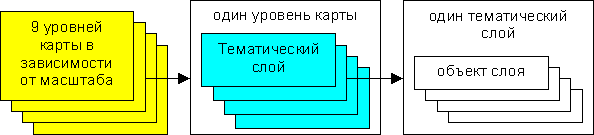

Векторная карта основана на понятии объекта как неделимого для пользователя элемента, сведения о котором включают его геодезические координаты и атрибутивные данные из семантической базы.
Объекты в свою очередь группируются в тематические слои. Под слоем понимается часть графической базы, состоящая из однотипных объектов. Так, например, слоем могут считаться здания, а объектами этого слоя будут: жилые здания, промышленные здания, гаражи, ограждения и т.д. Система LasGIS может работать с 32-мя слоями по 20-30 типов объектов в слое.
Слои графической информации определенного масштаба составляют карту определенного уровня. Всего в системе 9 уровней карт (от масштаба 1:500 - 1 уровень до масштаба 1:200 миллионов - 9 уровень).
Принципиальным отличием системы LasGIS от однотипных систем является возможность для пользователя настройки графического изображения и структуры графических слоев.
Рис 1
Каждый графический объект в системе LasGIS связан с его описанием в семантической базе. Вызов информации об объекте возможен по его изображению на экране. И наоборот возможен поиск графического объекта (или группы объектов) по семантической базе данных.
Структура семантической базы также может быть настроена или отредактирована пользователем. Так, например, по зданиям может содержаться следующая информация: адрес, площадь, число жителей, стоимость и т.д. Всего в системе может быть настроено до 256 атрибутивных баз данных по объектам.
Кроме атрибутивной информации для каждого объекта карты можно хранить некоторый слайд или рисунок, в котором могут быть свои графические объекты, по которым в свою очередь можно задавать атрибутивную информацию и слайды.
Растровая карта представляет собой набор внутрисистемных растровых файлов <.PCM> или стандартных растровых файлов <.BMP> или <.PCX> строго привязанных в системе LasGIS к геодезическим координатам, которые первыми выводятся на экран или принтер. Таким образом, получается возможность создавать векторную карту по растровому изображению. Технология создания растровой карты состоит из трех этапов:
Растровая карта как и векторная разделена по масштабным уровням. Предусмотрена возможность выводить плоскостные объекты в полупрозрачном режиме. В этом случае на экране и принтере одновременно видно как растровую карту, так и объекты карты.
Размер растровой карты практически неограничен и определяется лишь размером носителя. Так, например, карта масштаба 1:10000 для города Омска находится во втором уровне и состоит из 1108 файлов <.PCM> с общим размером 218 Мбайт. Карта масштаба 1:500 для города Омска состоит из 8800 файлов <.PCM> с общим размером 40 Гбайт или 8 Гбайт для файлов <.PCX>. В данный момент в Главомскархитектуре производится постоянный мониторинг планшетов масштаба 1:500. То есть, при изменении планшета, планшет сканируется и обновляется в растровой карте.
Имеется открытый внешний ФОРМАТ ОБМЕНА ДАННЫХ, позволяющий обмениваться графическими данными с другими системами.
Для обеспечения возможности решения прикладных задач управления городским хозяйством на основе кадастровой информации (задачи моделирования и прогнозирования), в систему LasGIS встроен ЯЗЫК ПРОГРАММИРОВАНИЯ.
СИНТАКСИС языка подобен синтаксису языков FOXPRO или CLIPER.
ФУНКЦИИ языка позволяют:
Практически на основе языка в системе LasGIS можно создавать автоматизированные СИСТЕМЫ ВЕДЕНИЯ ОТРАСЛЕВЫХ КАДАСТРОВ на основе банка кадастровой информации.